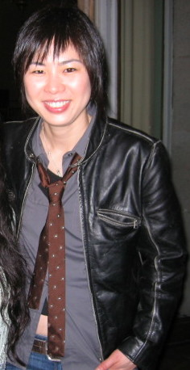

Alice Wu and Saving Face (2004)

Personal Information
Movie Information
Behind-the-Scene
- Ethnicity: Chinese American
- Occupation: Director, Screenwriter
- Birth: San Jose, California, United States, 1970
- Education: Stanford University (BS, MS in Computer Science)
- Title: Saving Face
- Where to watch: Amazon
- Movie info: "Saving Face" is a 2004 romantic comedy-drama film directed by Alice Wu, starring Michelle Krusiec, Joan Chen, and Lynn Chen. The film centers on a young Chinese-American surgeon, Wilhelmina "Wil" Pang, whose life is turned upside down when her mother, Hwei-Lan Gao, moves in with her, pregnant and unwed. The film explores themes of family, cultural identity, and LGBTQ+ relationships within the Chinese-American community.
- Based on: Alice Wu's personal experiences and her observations of the Chinese-American community.
- Awards:
- Nominated for the Breakthrough Director Award at the 2005 Gotham Awards
- Winner of the Viewer's Choice Award at the 2005 Golden Horse Film Festival
- Nominated for the GLAAD Media Award for Outstanding Film in Limited Release at the 2006 GLAAD Media Awards
- Alice Wu won the Visionary Award at the San Diego Asian Film Festival
- Alice Wu won the Audience Award for Best Narrative at the San Francisco International Asian American Film Festival in 2005
- Genre: Romantic Comedy-Drama
- Theme: The film explores themes of family, identity, and acceptance, particularly focusing on the intersection of Chinese-American and LGBTQ+ identities.
- Cultural background: Alice Wu draws from her own background as a Chinese-American to portray the nuanced cultural dynamics within the film.
Source
- Concept development: Alice Wu discusses how the story evolved from her personal experiences and the importance of representation.
Source
- Film technique: Wu uses a blend of humor and drama to address serious themes, employing a style that is both heartfelt and accessible.
Source
- Collaborator:
- Screenwriter: Alice Wu wrote the screenplay herself, drawing from personal and community stories.
Source
- Actor:
- Michelle Krusiec as Wilhelmina "Wil" Pang - Wu chose Krusiec for her ability to embody the complex character of Wil.
Source
- Joan Chen as Hwei-Lan Gao - Chen was selected for her depth and experience, bringing authenticity to the role.
Source
- Lynn Chen as Vivian Shing - Wu appreciated Chen's portrayal of a confident and independent love interest.
Source
- Producer: The film was produced by Will Smith's production company, Overbrook Entertainment.
Source
- Fund support: The film received financial backing from Overbrook Entertainment and various grants supporting independent filmmakers.
Source
- Challenge: Wu faced challenges in balancing the comedic and dramatic elements of the story, ensuring the cultural nuances were respectfully and accurately portrayed.
Source
- Anecdote: Alice Wu shared a story about how her mother inspired the character of Hwei-Lan Gao and the importance of family in her own life.
Source